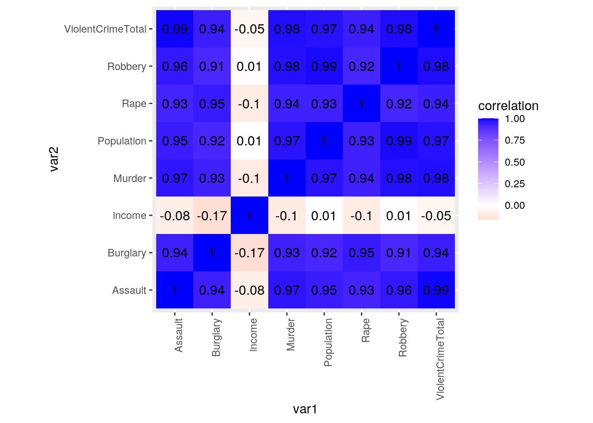
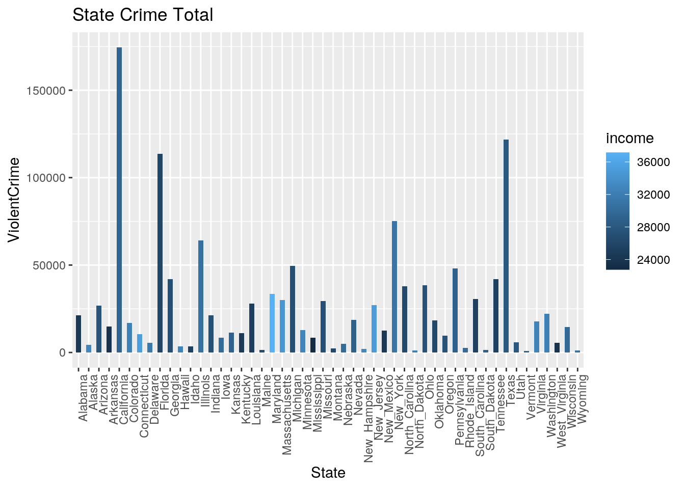
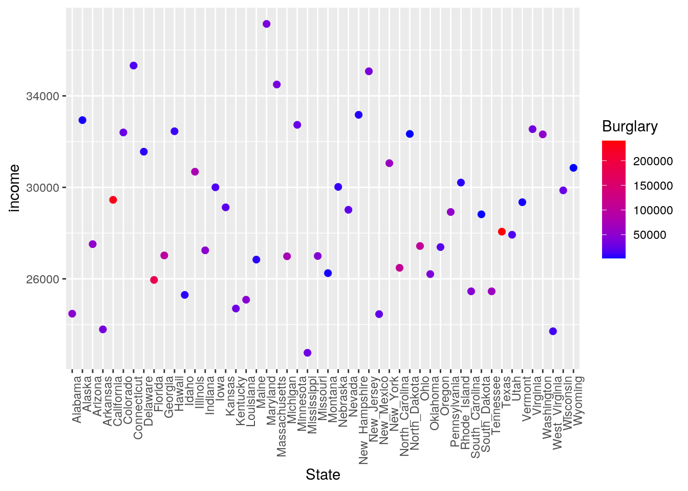
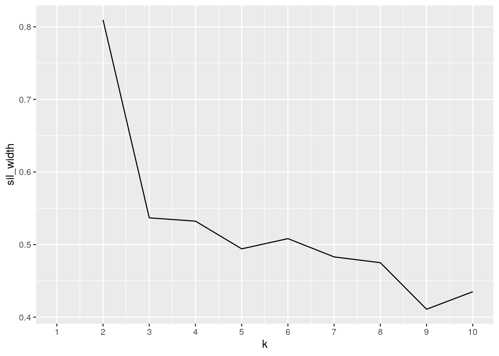
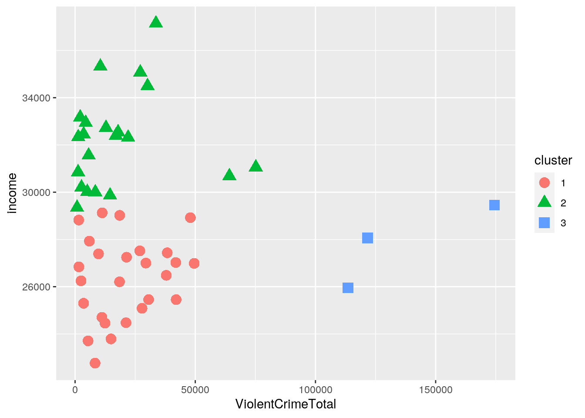

The dataset crime.us was found first through R datasets, and it became extremely interesting to me because I have always been interested in crime and crime rates. This dataset contains data from each state in the US and details their total violent crimes as well as the number of individual crimes, such as rape, murder, burglary, robbery, and assualt. I thought it would be interesting to compare these statistics to average income by state. Many people believe that lower income areas are more inclined to have higher instances of crime, so I believed this would be a good way of finding out if that is true. The dataset us_rent_income, obtained from R datasets, contains the average rent and income that a person pays and get paid in each state. It would make sense for instances of burglary tobe higher in low income states since people may feel the need to steal more if they cannot afford necessities. Otherwise, I would not expect any strong correlation between crime and income.
install.packages("VGAMdata", repos = "http://cran.us.r-project.org")
library(VGAMdata)
library(tidyverse)
library(dplyr)income <- us_rent_income %>% pivot_wider(names_from = "variable",
values_from = "estimate") %>% filter(!is.na(income)) %>%
mutate(new_name = str_replace(NAME, " ", "_")) %>% select(c(-moe,
-NAME))First, I pivoted wider in order to make income and rent their own column, so each each vaule would line up by state. This created many NA’s since there were no rent values for income, and no income values for rent. Since I wanted to focus on income, I filtered out the NA’s on the income column. Following this, I wanted to join with crime.us by state, however states with 2 names, such as New York, contained an “" in the crime.us dataset, so I had to mutate a new column to include "” in order for states to be renamed (eg. New_York). Lastly, I renamed the dataset “income” so it was easier to read.
crime_join <- crime.us %>% left_join(income, by = c(State = "new_name"))
crime <- crime_join %>% select(-c(10:23, 8, 25))
write.csv(crime, "~/data.csv")
data <- read.csv("data.csv")I did a left join by state using the datasets crime.us and income. Since the column names were different, I had to equal State to new_name to ensure they joined correctly. Many columns were deleted, such as rent from the income dataset, and any crime rate column from the crime.us. dataset. I wanted the number of crimes, rather than the crime rate in order to visualize it with the population. The only column I kept from the income dataset was state and income, and all individual crimes were kept on the crime.us dataset.
crime %>% arrange(desc(ViolentCrimeTotal))## State Population ViolentCrimeTotal Murder Rape Robbery Assault
## 1 California 36961664 174459 1972 8713 64093 99681
## 2 Texas 24782302 121668 1328 8287 38035 74018
## 3 Florida 18537969 113541 1017 5501 30911 76112
## 4 New_York 19541453 75176 778 2586 28136 43676
## 5 Illinois 12910409 64185 773 3901 22923 36588
## 6 Michigan 9969727 49547 627 4514 12330 32076
## 7 Pennsylvania 12604767 47965 661 3651 17514 26139
## 8 Tennessee 6296254 42041 461 1993 9647 29940
## 9 Georgia 9829211 41880 566 2301 14603 24410
## 10 Ohio 11542645 38332 519 4022 17782 16009
## 11 North_Carolina 9380884 37929 494 2306 11825 23304
## Burglary income
## 1 230137 29454
## 2 240233 28063
## 3 181884 25952
## 4 62842 31057
## 5 77850 30684
## 6 75815 26987
## 7 54797 28923
## 8 63646 25453
## 9 98362 27024
## 10 104213 27435
## 11 107830 26482
## [ reached 'max' / getOption("max.print") -- omitted 39 rows ]crime %>% filter(income == max(income)) %>% select(State)## State
## 1 Marylandcrime %>% mutate(CrimeRate = Population/ViolentCrimeTotal)## State Population ViolentCrimeTotal Murder Rape Robbery Assault
## 1 Alabama 4708708 21179 323 1504 6259 13093
## 2 Alaska 698473 4421 22 512 655 3232
## 3 Arizona 6595778 26929 354 2110 8099 16366
## 4 Arkansas 2889450 14959 179 1368 2582 10830
## 5 California 36961664 174459 1972 8713 64093 99681
## 6 Colorado 5024748 16976 175 2242 3387 11172
## 7 Connecticut 3518288 10508 107 651 3990 5760
## 8 Delaware 885122 5635 41 338 1671 3585
## 9 Florida 18537969 113541 1017 5501 30911 76112
## 10 Georgia 9829211 41880 566 2301 14603 24410
## Burglary income CrimeRate
## 1 48837 24476 222.3291
## 2 3597 32940 157.9898
## 3 53412 27517 244.9322
## 4 34764 23789 193.1580
## 5 230137 29454 211.8645
## 6 26649 32401 295.9913
## 7 15073 35326 334.8199
## 8 6932 31560 157.0758
## 9 181884 25952 163.2711
## 10 98362 27024 234.6994
## [ reached 'max' / getOption("max.print") -- omitted 40 rows ]Catergorial <- crime %>% mutate(ViolentCrimeTotal_cat = case_when(ViolentCrimeTotal >
20000 ~ "high", ViolentCrimeTotal < 20000 & 10000 ~ "med",
ViolentCrimeTotal < 1000 ~ "low"))
Catergorial %>% group_by(ViolentCrimeTotal_cat) %>% summarize(mean = mean(income),
sd = sd(income), count = n(), se = sd/sqrt(count), max = max(income,
na.rm = T))## # A tibble: 2 x 6
## ViolentCrimeTotal_cat mean sd count se max
## <chr> <dbl> <dbl> <int> <dbl> <dbl>
## 1 high 28730. 3517. 21 767. 37147
## 2 med 29037. 3376. 29 627. 35326Catergorial %>% group_by(ViolentCrimeTotal_cat) %>% summarize(mean = mean(Burglary),
sd = sd(Burglary), count = n(), se = sd/sqrt(count), max = max(income,
na.rm = T))## # A tibble: 2 x 6
## ViolentCrimeTotal_cat mean sd count se max
## <chr> <dbl> <dbl> <int> <dbl> <dbl>
## 1 high 83135. 60859. 21 13280. 37147
## 2 med 15503. 11145. 29 2070. 35326Catergorial %>% group_by(ViolentCrimeTotal_cat) %>% summarize(mean = mean(Assault),
sd = sd(Burglary), count = n(), se = sd/sqrt(Assault), max = max(Assault,
na.rm = T))## # A tibble: 50 x 6
## # Groups: ViolentCrimeTotal_cat [2]
## ViolentCrimeTotal_cat mean sd count se max
## <chr> <dbl> <dbl> <int> <dbl> <int>
## 1 high 31141. 60859. 21 532. 99681
## 2 high 31141. 60859. 21 476. 99681
## 3 high 31141. 60859. 21 193. 99681
## 4 high 31141. 60859. 21 221. 99681
## 5 high 31141. 60859. 21 390. 99681
## 6 high 31141. 60859. 21 318. 99681
## 7 high 31141. 60859. 21 553. 99681
## 8 high 31141. 60859. 21 432. 99681
## 9 high 31141. 60859. 21 430. 99681
## 10 high 31141. 60859. 21 422. 99681
## # … with 40 more rowscrime %>% summarize(mean = mean(Rape), sd = sd(Rape), count = n(),
se = sd/sqrt(Rape), max = max(Rape))## mean sd count se max
## 1 1758.94 1822.017 50 46.98168 8713
## 2 1758.94 1822.017 50 80.52254 8713
## 3 1758.94 1822.017 50 39.66534 8713
## 4 1758.94 1822.017 50 49.26170 8713
## 5 1758.94 1822.017 50 19.51950 8713
## 6 1758.94 1822.017 50 38.47996 8713
## 7 1758.94 1822.017 50 71.41048 8713
## 8 1758.94 1822.017 50 99.10467 8713
## 9 1758.94 1822.017 50 24.56584 8713
## 10 1758.94 1822.017 50 37.98343 8713
## 11 1758.94 1822.017 50 92.02576 8713
## 12 1758.94 1822.017 50 77.55020 8713
## 13 1758.94 1822.017 50 29.17188 8713
## 14 1758.94 1822.017 50 44.99151 8713
## 15 1758.94 1822.017 50 62.38468 8713
## 16 1758.94 1822.017 50 55.03604 8713
## 17 1758.94 1822.017 50 46.90378 8713
## 18 1758.94 1822.017 50 49.42455 8713
## 19 1758.94 1822.017 50 93.96336 8713
## 20 1758.94 1822.017 50 53.58874 8713
## [ reached 'max' / getOption("max.print") -- omitted 30 rows ]crime %>% summarize(mean = mean(Robbery), sd = sd(Robbery), count = n(),
se = sd/sqrt(Robbery), max = max(Murder, na.rm = T))## mean sd count se max
## 1 8076.56 11652.93 50 147.29314 1972
## 2 8076.56 11652.93 50 455.31750 1972
## 3 8076.56 11652.93 50 129.48495 1972
## 4 8076.56 11652.93 50 229.32789 1972
## 5 8076.56 11652.93 50 46.02880 1972
## 6 8076.56 11652.93 50 200.22919 1972
## 7 8076.56 11652.93 50 184.47968 1972
## 8 8076.56 11652.93 50 285.06688 1972
## 9 8076.56 11652.93 50 66.27938 1972
## 10 8076.56 11652.93 50 96.43040 1972
## 11 8076.56 11652.93 50 362.38877 1972
## 12 8076.56 11652.93 50 744.47814 1972
## 13 8076.56 11652.93 50 76.96606 1972
## 14 8076.56 11652.93 50 135.90400 1972
## 15 8076.56 11652.93 50 337.09402 1972
## 16 8076.56 11652.93 50 275.73651 1972
## 17 8076.56 11652.93 50 193.43787 1972
## 18 8076.56 11652.93 50 149.13932 1972
## 19 8076.56 11652.93 50 583.37598 1972
## 20 8076.56 11652.93 50 106.34516 1972
## [ reached 'max' / getOption("max.print") -- omitted 30 rows ]crime %>% summarize(mean = mean(Murder), sd = sd(Murder), count = n(),
se = sd/sqrt(Murder), max = max(Murder, na.rm = T))## mean sd count se max
## 1 301.94 373.4313 50 20.778275 1972
## 2 301.94 373.4313 50 79.615826 1972
## 3 301.94 373.4313 50 19.847651 1972
## 4 301.94 373.4313 50 27.911568 1972
## 5 301.94 373.4313 50 8.409251 1972
## 6 301.94 373.4313 50 28.228755 1972
## 7 301.94 373.4313 50 36.100969 1972
## 8 301.94 373.4313 50 58.320175 1972
## 9 301.94 373.4313 50 11.709821 1972
## 10 301.94 373.4313 50 15.696489 1972
## 11 301.94 373.4313 50 79.615826 1972
## 12 301.94 373.4313 50 79.615826 1972
## 13 301.94 373.4313 50 13.431391 1972
## 14 301.94 373.4313 50 21.209474 1972
## 15 301.94 373.4313 50 64.042944 1972
## 16 301.94 373.4313 50 34.232394 1972
## 17 301.94 373.4313 50 27.989861 1972
## 18 301.94 373.4313 50 16.220820 1972
## 19 301.94 373.4313 50 73.235908 1972
## 20 301.94 373.4313 50 17.843239 1972
## [ reached 'max' / getOption("max.print") -- omitted 30 rows ]crime %>% summarize(mean = mean(Population), sd = sd(Population),
count = n(), se = sd/sqrt(Population), max = max(Population,
na.rm = T))## mean sd count se max
## 1 6128138 6804700 50 3135.871 36961664
## 2 6128138 6804700 50 8142.058 36961664
## 3 6128138 6804700 50 2649.574 36961664
## 4 6128138 6804700 50 4003.146 36961664
## 5 6128138 6804700 50 1119.266 36961664
## 6 6128138 6804700 50 3035.651 36961664
## 7 6128138 6804700 50 3627.800 36961664
## 8 6128138 6804700 50 7232.816 36961664
## 9 6128138 6804700 50 1580.440 36961664
## 10 6128138 6804700 50 2170.449 36961664
## 11 6128138 6804700 50 5979.216 36961664
## 12 6128138 6804700 50 5473.085 36961664
## 13 6128138 6804700 50 1893.821 36961664
## 14 6128138 6804700 50 2684.950 36961664
## 15 6128138 6804700 50 3923.562 36961664
## 16 6128138 6804700 50 4053.041 36961664
## 17 6128138 6804700 50 3276.146 36961664
## 18 6128138 6804700 50 3210.594 36961664
## 19 6128138 6804700 50 5926.547 36961664
## 20 6128138 6804700 50 2850.306 36961664
## [ reached 'max' / getOption("max.print") -- omitted 30 rows ]I first arranged by descending incomes to see the state with the highest violent crime rate, but also filtered by income and selected state in order to see the state with the highest income. These states did not add up, which was not that surprising to me. I also mutated a crime rate column in order to see the percentage of crime when it includes population. This gives better insight to the amount of crime per state given how many people are in the state. Next, I had to create a categorical variable that I could group by, I used case_when to create a variable that assigned each state as high, medium, or low depending on the amount of violent crimes committed. Now, it was possible to group by this catergorial variable to see the summary statistics of different ranges of crime. In terms of income, the mean income was less than a thousand dollar difference between high and medium crime areas. This is an indication that income does not play a huge role in the amount of crime in a state. Looking at burglary, the mean was significantly higher in high crime areas, which makes sense since burgaraly is one of the crimes listed. None of the other variable were too surprising since summarize was used to find 5 summary statistics for each numerical variable. It was interesting to see different numbers of crimes, such as murders being much lower than other crimes.
cormat <- crime %>% select_if(is.numeric) %>% cor(use = "pair")
tidycor <- cormat %>% as.data.frame %>% rownames_to_column("var1") %>%
pivot_longer(-1, names_to = "var2", values_to = "correlation")
tidycor %>% ggplot(aes(var1, var2, fill = correlation)) + geom_tile() +
scale_fill_gradient2(low = "red", mid = "white", high = "blue") +
geom_text(aes(label = round(correlation, 2)), color = "black",
size = 4) + theme(axis.text.x = element_text(angle = 90,
hjust = 1)) + coord_fixed()
ggplot(crime, aes(State, ViolentCrimeTotal)) + geom_bar(stat = "summary",
width = 0.5, aes(fill = income)) + geom_errorbar(stat = "summary") +
xlab("State") + ylab("ViolentCrime") + ggtitle("State Crime Total") +
scale_y_continuous() + theme(axis.text.x = element_text(angle = 90,
hjust = 1))
ggplot(crime) + geom_point(size = 2, aes(x = State, y = income,
color = Burglary)) + theme(axis.text.x = element_text(angle = 90,
hjust = 1)) + scale_color_gradient(low = "blue", high = "red")
For the correlation heat map, it is apparent that violent crime total and each individual crime had an extremely high positive correlations, which makes sense since a crime is being committed. The higher the individual crime, the higher the total crime. However, there is no strong correlation with any form of crime and income. This shows that income does not affect the amount of crime committed. The highest correlation from this group was burglary and income, with a negative correlation of -0.17. This means that income has the greatest impact on burglary, out of all crimes, which I had predicted. The first bar plot shows state and violent crime rate plotted against each other, colored by income. It shows California having the largest number of violent crimes, which makes sense because it is the state with the largest population. This made it possible to visualize the lack of correlation between income and violent crime. If lower income influenced violent crime, the dark blue shading would be more prominent in higher bars, but that is not the case. Light blue and dark blue bars are spread throughout the graph. The second scatterplot shows state and income plotted against each other, colored by burglary in order to see if burglary is influenced by income at all. As expected, there is no correlation or pattern between state and income since every state is different, and there appears to be no pattern in the amount of burglaries by income. If there were a strong correlation, the darker blues and purples would all be scattered toward the bottom of the plot since that indicated lower income, but that is not the case. High instances of burgaries occur at all incomes.
library(cluster)
pam_dat <- crime %>% select(ViolentCrimeTotal, income, Burglary)
sil_width <- vector()
for (i in 2:10) {
pam_fit <- pam(pam_dat, k = i)
sil_width[i] <- pam_fit$silinfo$avg.width
}
ggplot() + geom_line(aes(x = 1:10, y = sil_width)) + scale_x_continuous(name = "k",
breaks = 1:10)
crime %>% select(ViolentCrimeTotal, income, Burglary) %>% scale %>%
pam(3)## Medoids:
## ID ViolentCrimeTotal income Burglary
## [1,] 36 -0.2306842 -0.7935907 -0.1137775
## [2,] 6 -0.2753740 1.0262642 -0.3309556
## [3,] 43 2.8478940 -0.2482806 3.7645564
## Clustering vector:
## [1] 1 2 1 1 3 2 2 2 3 1 2 1 2 1 2 1 1 1 1 2 2 1 2 1 1 1 2 1 2 2 1 2 1 2 1 1 1 1
## [39] 2 1 1 1 3 1 2 2 2 1 2 2
## Objective function:
## build swap
## 0.9236773 0.8128061
##
## Available components:
## [1] "medoids" "id.med" "clustering" "objective" "isolation"
## [6] "clusinfo" "silinfo" "diss" "call" "data"crime_clust <- crime %>% select(ViolentCrimeTotal, income, Burglary) %>%
scale %>% pam(3)
pamclust <- crime %>% mutate(cluster = as.factor(crime_clust$clustering))
pamclust %>% ggplot(aes(ViolentCrimeTotal, income, color = cluster,
shape = cluster)) + geom_point(size = 4)
crime_clust$silinfo$avg.width## [1] 0.4255713First I picked the number of clusters using a ggplot, and although 2 clusters came out with the highest sil_width, I decided to use 3 clusters in order to get a better visualization, since the score was still high. Next, I performed the cluster, which gave the mediods for each cluster. This was able to be visualized plotting the clusters. Coloring and shaping by cluster allowed for a good representation of where each cluster was. Even though it was clustered by 3 variables, the original 2 variables were the only ones visualized. Again, this showed that there is no noticeable correlation between income and violent crime. Clusters 1 and 2 show no significant difference in violent crime total, although income increases. Cluster 3 shows some outliers in the data that do also not show a certain pattern. Lastly, a goodness of fit score of 0.42 was produced, meaning it was weak.
Note that the echo = FALSE parameter was added to the code chunk to prevent printing of the R code that generated the plot.